List beze jmen
I do odříznuté obce Pernink se donesly veselé noviny o konci války,
přináší však s sebou i
hořkou pachuť, pachuť ztráty a odloučení. Obecní zastupitelstvo musí
vystavit seznam se
jmény všech Němců žijících v obci, lidí které několika údery psacího
stroje přijdou o své
domovy, o sousedy i o živobytí, přijdou tak o celý svůj dosavadní život,
tak jak ho znali.
List beze jmen je komorní LARP o poválečném odsunu Němců ze Sudet. Každý
z hráčů bude mít
roli zastupitele na úřadě, a svými rozhodnutími, intrikami a možná i
úplatky, bude činit co
mu přijde správné či výhodné.
Hra trvala 2-3 hodiny

Bojování a střety
Prostě spustu různých bojů s méně roleplay (nebo i více)

Útěk
Z nedalekého zajateckého tábora Sauersack uprchlo několik vězňů. Teď se skrývají
v lesích v
Krušnohoří snaží se utéct hlídce.
Útěk je večerní akce na hodinu až dvě. Hráči budou uprchlíci, někteří i strážci.
Na akci si vezměte teplé, nejlépe pro vás tmavé oblečky.
Ke hře budou využívány imitace palných zbraní fungující na bázi stlačeného
vzduchu (Nerf a
podobně, ne airsoft)
